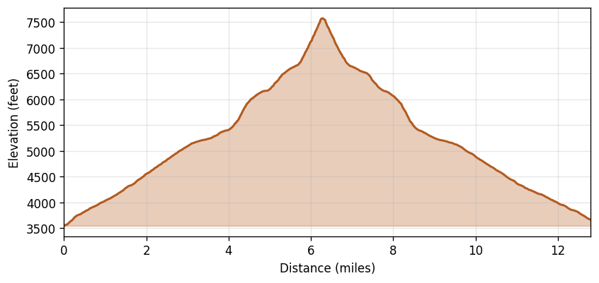

Cascade Pass and Sahale Arm
Region: North Cascades National Park, WA
Date: 2025-07-26 (08:08–20:38 PDT)
Distance: 12.80 miles
Gain: 3,991 feet
Duration: 12h 29m (8h 4m moving, 4h 25m stopped)
Avg speed: 1.59 mph moving / 1.02 mph overall
Weather: Overcast at start, mainly clear by the descent. Temps 52–65°F, W winds 2–6 mph, no precipitation.
Route
Elevation Profile
